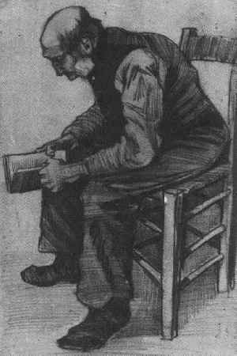

O prazer da leitura de livros impressos
Leituras novas que me lembraram antigas

Antes de qualquer coisa, uma confissão: há muito não me dedicava a uma boa e concentrada leitura. Daquelas que exigem muitas pausas para pensar, para buscar mais elementos de compreensão em outras fontes.
Isso mudou um pouco quando decidi comprar um kindle, por dois motivos: podia comprar livros mais baratos, e podia ler minha biblioteca em qualquer lugar, sem carregar peso. E foi uma importante mudança, pois reacendeu a curiosidade e, digo mesmo, a necessidade de leituras mais profundas.
E então iniciou-se um ciclo fantástico de dependências inter-relacionadas, em que preciso de leituras paralelas para poder continuar com coisas que comecei a estudar, novidades que me interessam, coisas que parei de ler...
Mas existem momentos, de um tal nível alto de prazer, em que a leitura mexe tão fundo com sentimentos esquecidos, em que a única reação possível é pausar a leitura e aproveitar esse verdadeiro gozo estético.
E não estou falando de literatura de contos, romances, novelas, ou poesia. Estou falando de leitura técnico-científica.
Isso mesmo! Livros bem escritos, de autores que além do conhecimento técnico, tem o dom de bem escrever. Não é fácil encontrar gente assim, livros assim, mas eles existem.
O primeiro, um livro sobre matemática elementar, da SBM - Sociedade Brasileira de Matemática (essa instituição merece um texto à parte, por seu trabalho no Brasil junto com o IMPA - Instituto de Matemática Pura e Aplicada), "Tópicos de Matemática Elementar - Volume 1: Números Reais", de Antonio Caminha Muniz Neto.
Eu já estava encantado com a leitura, com a condução na construção do instrumental relacionado à manipulação dos diversos conjuntos numéricos quando, olhando as referências bibliográficas sugeridas para um tópico, estava citado o livro de Elon Lages Lima, "Curso de Análise, volume 1".
Quem passou por esse livro, certamente acabou lendo mais obras desse matemático, incansável na luta pelo bom ensino da matemática no Brasil, com cursos, palestras e livros dedicados não só à matemática mais atual, mas a um ensino saudável e acima de tudo honesto, de seus princípios mais básicos.
E não há, em minha opinião, nada mais clássico que o primeiro capítulo desse livro, "Conjuntos finitos e infinitos". Mais que a teoria ali apresentada, deduzida e explicada, estão os exercícios. Em nenhuma outra leitura minha, em qualquer área de conhecimento, jamais experimentei esse encontro entre ciência, prazer literário e pedagogia. O professor Elon de fato nos leva pelas mãos a um dos mais importantes fundamentos da matemática, que é a teoria dos conjuntos.
Teoria dos conjuntos pra gente grande!
O prefácio do livro deveria ser leitura obrigatória para qualquer estudante em qualquer área do conhecimento. Nele o professor se dispõe a orientar seus leitores, que embora conduzidos, mover-se-ão por conta própria.
Procure o livro, vale à pena a leitura atenta do prefácio, bem como, no mínimo, uma passeada por ele.
E aí fiquei eu um bom tempo sentindo o que senti há tantos anos já passados, quando com muita dificuldade tentava resolver os problemas sugeridos, cujo mais importante objetivo era exercitar o levantamento, formalização e teste de hipóteses.
E o outro livro, excelente na sua tradução em português mesmo (o que é uma raridade, mas tem um segredo: Luciano Ramalho é o revisor técnico), é o "A Linguagem de Programação GO", cujo um dos autores é ninguém nada mais que o já lendário Brian Kernighan.
Outro livro excelente, com leitura fluída, exemplos claros, e exercícios propostos desafiadores e elucidativos (o capítulo sobre testes é uma pequena obra à parte).
Mas aqui não foi uma referência, foi uma imagem. Lendo o livro, do nada, chego à uma imagem representando o conjunto de Mandelbrot. Essa é a imagem que certamente mais me fascinou no começo de minha faculdade de matemática. Por conta dessa imagem e da facilidade de representar esse conjunto, aprendi a programar em C, para fazer minhas próprias imagens, e conhecer outros fractais, além de um pouco sobre a Teoria do Caos. Uma boa referência sobre o assunto, com um bom autor, é o livro "Caos. A criação de uma nova ciência", do jornalista James Gleick.
E novamente, lembranças de um tema que está sempre presente e de inegáveis experiências estéticas na ciência. As leituras sobre fractais me levaram a campos muito interessantes, me fizeram programar mais, e me abriram as portas à filosofia.
Tudo isso por conta de bons livros impressos, escritos por bons autores, preparados por bons editores, dos quais não consigo me livrar, apesar de todas as novas comodidades tecnológicas.
--
Publicado primeiramente no Linkedin.